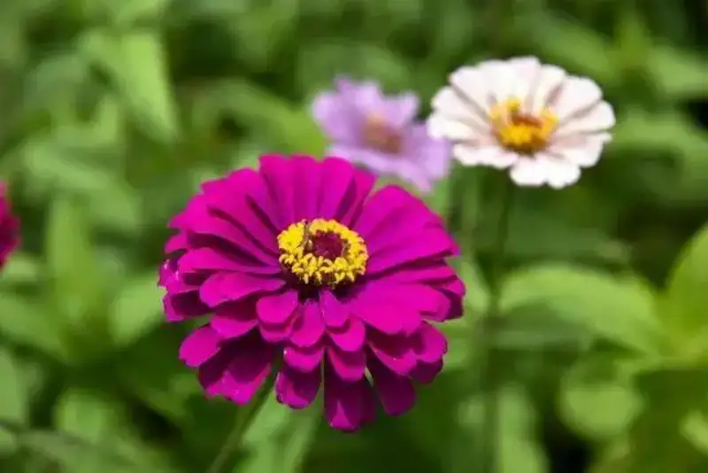
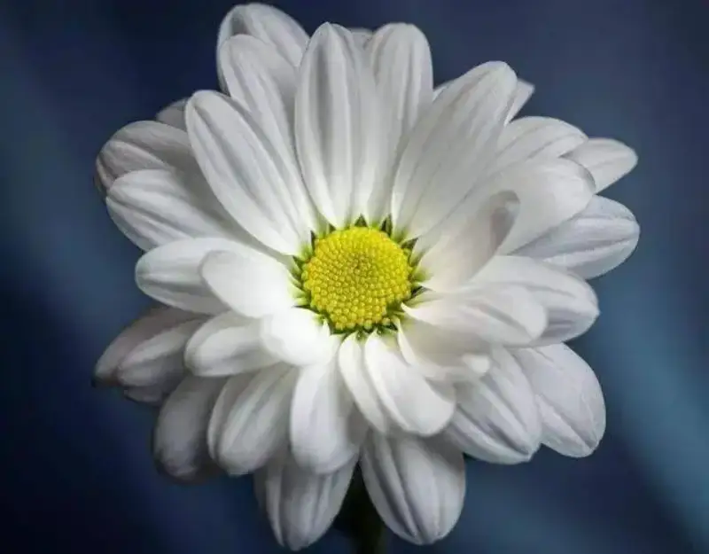
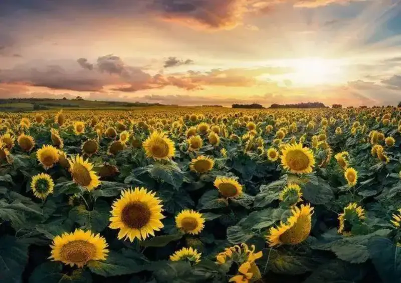
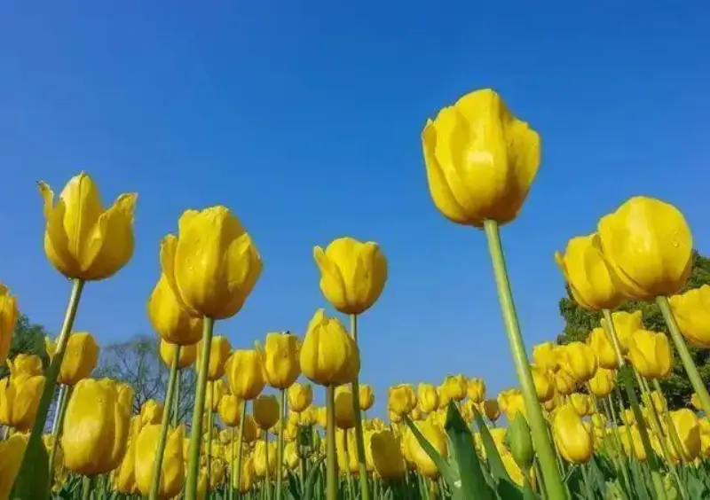
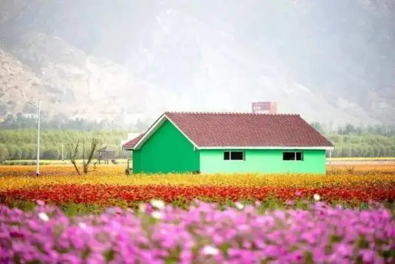
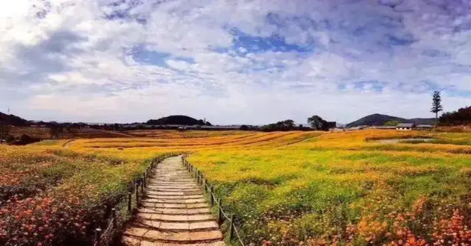
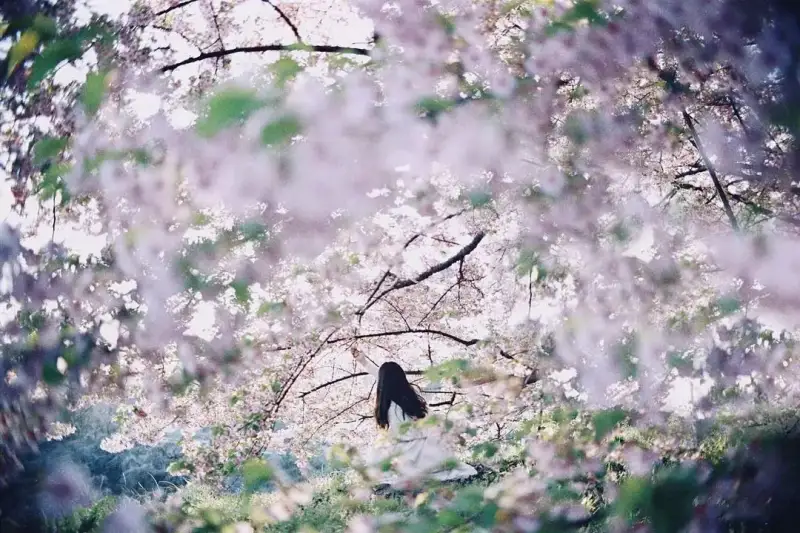
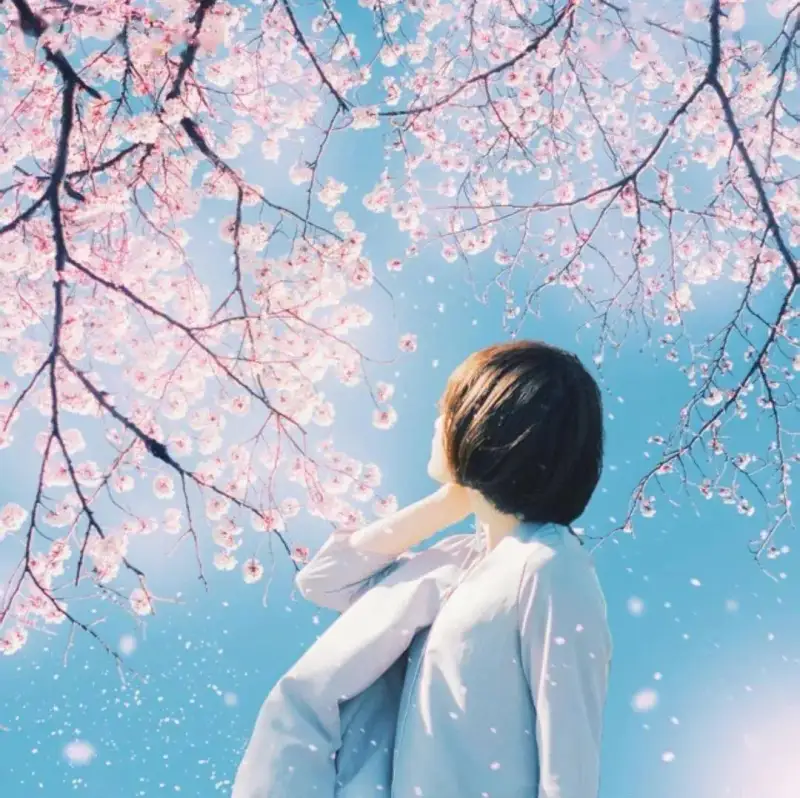
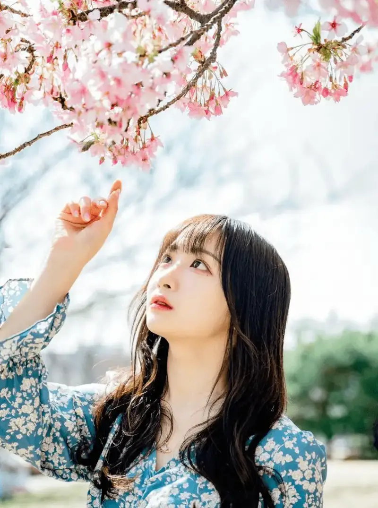
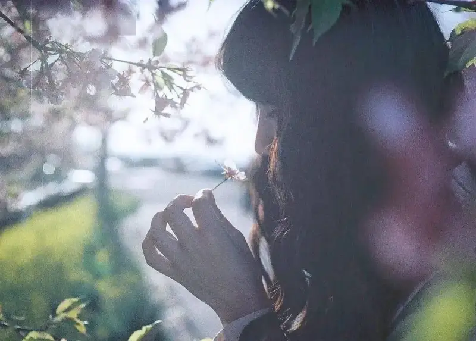

Published: 2023-02-16
Source link: https://www.cnphotos.net/academy/show-114.html
Lens: a large-aperture lens. It does not matter whether it is wide or telephoto. Both work for flower subjects.
Accessories: polarizing filter, lens hood, tripod. These are optional. Leave them home if you do not have them.
►The basic approach
The simplest flower tip is to shoot a close-up. Move in close and catch the petals. But a good close-up is harder than it looks. Find the flower with the most character, then use a large aperture and shallow depth of field to separate it from the messy background. Use side-backlight to outline the flower, and the image draws the eye.

Besides a normal close-up, you can also fill the frame. Let the flower fill the whole viewfinder. This captures the beauty of the stamens. Because the focus distance is short, it tests your technique. You need to practice a lot.

►Wide-angle wide view
In the wild you often find a sea of flowers. The flowers are many and wide in range, which is perfect for a wide-angle lens. Raise your phone or camera, best above your own height, and you fill the frame with flowers. You can also use a tripod and a moving cloud for a long exposure. The flower-sea photo then looks full of movement.

►Shoot up from a low angle
Some flowers are very low. Try squatting down and shooting up. Use the blue sky as the background. Red, pink, and yellow flowers contrast with the sky, and the contrasting composition draws the eye.

►Pair with the landscape
If a sea of flowers feels too plain, shoot it together with nearby landmarks or people. This adds layers. The flower photo then becomes a picture with meaning. When you look back, you know where you have been. If you want a check-in photo in the flowers, frame it this way.

►A sense of depth
You can use lines to frame the shot. Look for a path nearby, such as a path between flower fields. As a leading line, it gives a sense of depth and layers. This tests the photographer's eye, because not every spot has such a path. Look for more angles and watch the scenes as you pass.

►Wide shot
With the wide-angle tip above, just place the woman among the flowers, and you get a classic wide portrait.

photo by ins @ doi_natsumi_
►Use a trick angle
If there are not many flowers and the setting around is messy, lower the camera angle and shoot up. You can still get a nice flower portrait.

photo by ins @ shuntosato

photo by ins @ _mallang__d_, @ shuntosato
►Make good use of props
When you shoot outdoors and have no props ready, use objects around you. For example, spring has the most flowers. Pluck one and use it as a prop.

photo by ins @ doi_natsumi_